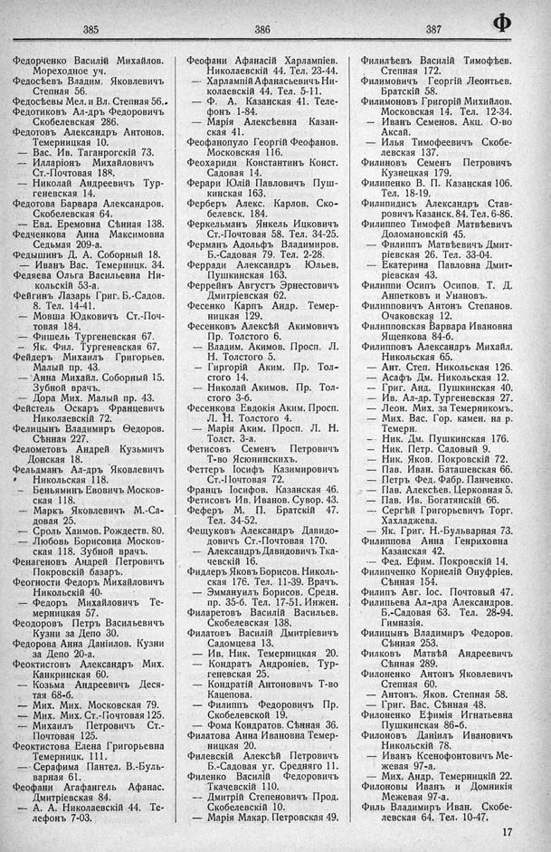

Лист источника 479
Скан

Распознанный текст
385
Федорченко Василій Михайлов.
Мореходное уч.
Ѳедосѣевъ Владим. Яковлевичъ
Степная 56.
Ѳедосѣевы Мел. и Вл. Степная 56..
Ѳедотиковъ Ал-дръ Федоровичъ
Скобелевская 286.
Федотовъ Александръ Антонов.
Темерницкая 10.
— Вас. Ив. Таганрогскій 73.
— Илларіонъ Михайловичъ
Ст.-Почтовая 188.
— Николай Андреевичъ Тур-
геневская 14.
Ѳедотова Варвара Александров.
Скобелевская 64.
- Евд. Еремовна Сѣнная 138.
Федченкова Анна Максимовна
Седьмая 209-а.
Ѳедышинъ Д. А. Соборный 18.
— Иванъ Вас. Темерницк. 34.
Ѳедяева Ольга Васильевна Ни-
кольскій 53-а.
Фейгинъ Лазарь Григ. Б.-Садов.
8. Тел. 14-41.
— Мовша Юдковичъ Ст.-Поч-
товая 184.
— Фишель Тургеневская 67.
— Як. Фил. Тургеневская 67.
Фейдеръ Михаилъ Григорьев.
Малый пр. 43.
— Анна Михайл. Соборный 15.
Зубной врачъ.
— Дора Мих. Малый пр. 43.
Фейстель Оскаръ Францевичъ
Николаевскій 72.
Фелицынъ Владимиръ Ѳедоров.
Сѣнная 227.
Ѳелометовъ Андрей Кузьмичъ
Донская 18.
Фельдманъ Ал-дръ Яковлевичъ
Никольская 118.
— Беньяминъ Евовичъ Москов-
ская 118.
— Маркъ Яковлевичъ М.-Са-
довая 25.
— Сроль Хаимов. Рождеств. 80.
— Любовь Борисовна Москов-
ская 118. Зубной врачъ.
Фенагеновъ Андрей Петровичъ
Покровскій базаръ.
Ѳеогности Федоръ Михайловичъ
Никольскій 40.
— Федоръ Михайловичъ Те-
мерницкая 57.
Ѳеодоровъ Петръ Васильевичъ
Кузни за Депо 30.
Ѳедорова Анна Даніилов. Кузни
за Депо 20-а.
Ѳеоктистовъ Александръ Мих.
Канкринская 60.
— Козьма Андреевичъ Деся-
тая 68-б.
— Мих. Мих. Московская 79.
— Мих. Мих. Ст.-Почтовая 125.
— Михаилъ Петровичъ Ст.-
Почтовая 125.
Ѳеоктистова Елена Григорьевна
Темерницк. 111.
— Серафима Пантел. В.-Буль-
варная 61.
Ѳеофани Агафангелъ Афанас.
Дмитріевская 84.
— А. А. Николаевскій 44. Те-
лефонъ 7-03.
386
Ѳеофани Афанасій Харлампіев.
Николаевскій 44. Тел. 23-44.
— Харлампій Афанасьевичъ Ни-
колаевскій 44. Тел. 5-11.
— Ф. А. Казанская 41. Теле-
фонъ 1-84.
— Марія Алексѣевна Казан-
ская 41.
Ѳеофанопуло Георгій Феофанов.
Московская 116.
Ѳеохариди Константинъ Конст.
Садовая 14.
Ферари Юлій Павловичъ Пуш-
кинская 163.
Ферберъ Алекс. Карлов. Ско-
белевск. 184.
Феркельманъ Янкель Ицковичъ
Ст.-Почтовая 58. Тел. 34-25.
Ферманъ Адольфъ Владимиров.
Б.-Садовая 79. Тел. 2-28.
Ферради Александръ Юльев.
Пушкинская 163.
Феррейнъ Августъ Эрнестовичъ
Дмитріевская 62.
Фесенко Карпъ Андр. Темер-
ницкая 129.
Фесенковъ Алексѣй Акимовичъ
Пр. Толстого 6.
— Владим. Акимов. Просп. Л.
Н. Толстого 5.
— Гиргорій Аким. Пр. Тол-
стого 14.
— Николай Акимов. Пр. Тол-
стого 3-б.
Фесенкова Евдокія Аким. Просп.
Л. Н. Толстого 4.
— Марія Аким. Просп. Л. Н.
Толст. 3-а.
Фетисовъ Семенъ Петровичъ
Т-во Ясюнинскихъ.
Феттеръ Іосифъ Казимировичъ
Ст.-Почтовая 72.
Францъ Іосифов. Казанская 46.
Фетисовъ Ив. Иванов. Сувор. 43.
Феферъ М. П. Братскій 47.
Тел. 34-52.
Фещуковъ Александръ Давидо-
довичъ Ст.-Почтовая 170.
— Александръ Давидовичъ Тка-
чевскій 16.
Фидлеръ Яковъ Борисов. Николь-
ская 176. Тел. 11-39. Врачъ.
— Эммануилъ Борисов. Средн.
пр. 35-б. Тел. 17-51. Инжен.
Филаретовъ Василій Васильев.
Скобелевская 138.
Филатовъ Василій Дмитріевичъ
Садомцева 13.
— Ив. Ник. Темерницкая 20.
— Кондратъ Андроніев. Тур-
геневская 25.
— Кондратій Антоновичъ Т-во
Кацепова.
— Филиппъ Федоровичъ Пр.
Скобелевской 19.
— Фома Кондратов. Сѣнная 36.
Филатова Анна Ивановна Темер-
ницкая 20.
Филевскій Алексѣй Петровичъ
Б.-Садовая уг. Средняго 11.
Филенко Василій Федоровичъ
Ткачевскій 110.
— Дмитрій Степеновичъ Прод.
Скобелевскій 10.
— Марія Макар. Петровская 49.
387
Ф
Филилѣевъ Василій Тимофѣев.
Степная 172.
Филимовичъ Георгій Леонтьев.
Братскій 58.
Филимоновъ Григорій Михийлов.
Московская 14. Тел. 12-34.
— Иванъ Семенов. Акц. О-во
Аксай.
— Илья Тимофеевичъ Скобе-
левская 137.
Филиновъ Семенъ Петровичъ
Кузнецкая 179.
Филипенко В. П. Казанская 106.
Тел. 18-19.
Филипидисъ Александръ Став-
ровичъ Казанск. 84. Тел. 6-86.
Филиппео Тимофей Матвѣевичъ
Доломановскій 45.
— Филиппъ Матвѣевичъ Дмит-
ріевская 26. Тел. 33-04.
— Екатерина Павловна Дмит-
ріевская 43.
Филиппи Осипъ Осипов. Т. Д.
Аппетковъ и Унановъ.
Филипповичъ Антонъ Степанов.
Очаковская 12.
Филипповская Варвара Ивановна
Ященкова 84-б.
Филипповъ Александръ Михайл.
Никольская 65.
— Ант. Степ. Никольская 126.
— Асафъ Дм. Никольская 12.
— Григ. Анд. Пушкинская 40.
— Ив. Ал-др. Тургеневская 27.
— Леон. Мих. за Темерникомъ.
— Мих. Вас. Гор. камен. на р.
Темерн.
— Ник. Дм. Пушкинская 176.
— Ник. Петр. Садовый 9.
— Ник. Яков. Покровскій 72.
— Пав. Иван. Баташевская 66.
— Петръ Фед. Фабр. Панченко.
— Пав. Алексѣев. Церковная 5.
— Пав. Ив. Богатянскій 66.
— Сергѣй Григорьевичъ Торг.
Хахладжева.
— Як. Григ. Н.-Бульварная 73.
Филиппова Анна Генриховна
Казанская 42.
- Фед. Ефим. Покровскій 14.
Филипченко Корнелій Онуфріев.
Сѣнная 154.
Филипъ Авг. Іос. Почтовый 47.
Филипьева Ал-дра Александров.
Б.-Садовая 63. Тел. 28-94.
Гимназія.
Филицынъ Владимиръ Федоров.
Сѣнная 253.
Филковъ Матвѣй Андреевичъ
Сѣнная 289.
Филоненко Антонъ Яковлевичъ
Степная 60.
— Антонъ Яков. Степная 58.
— Григ. Вас. Сѣнная 48.
Филоненко Ефимія Игнатьевна
Пушкинская 86-б.
Филоновъ Даніилъ Ивановичъ
Никольскій 78.
— Иванъ Ксенофонтовичъ Ме-
жевая 97-а.
— Мих. Андр. Темерницкій 22.
Филоновы Иванъ и Домникія
Межевая 97-а.
Филь Владимиръ Иван. Скобе-
левская 64. Тел. 10-47.
17